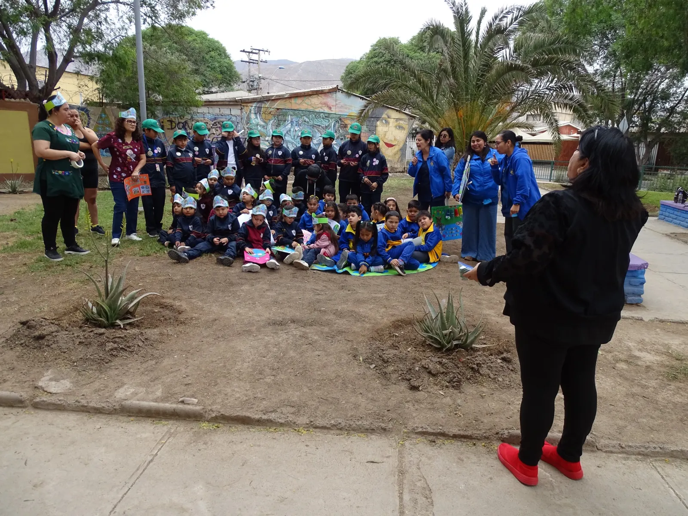
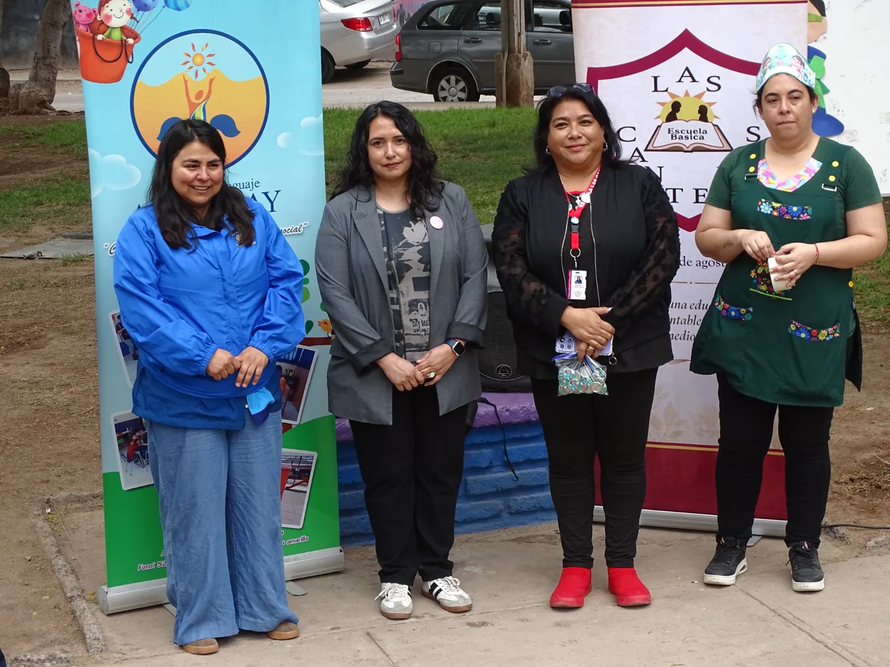
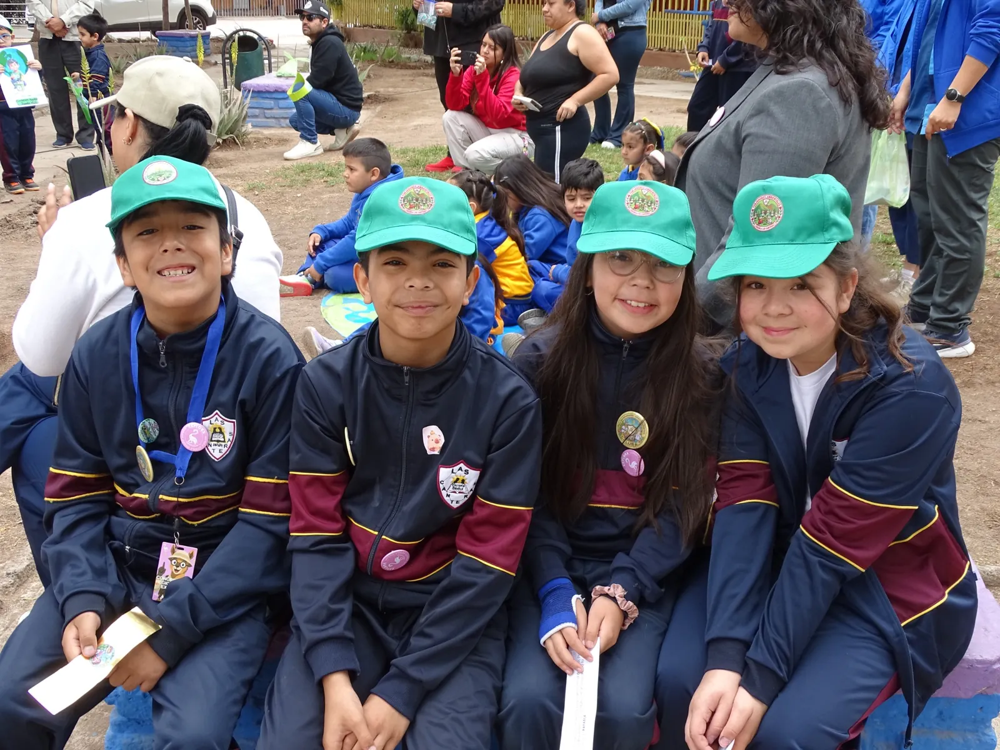
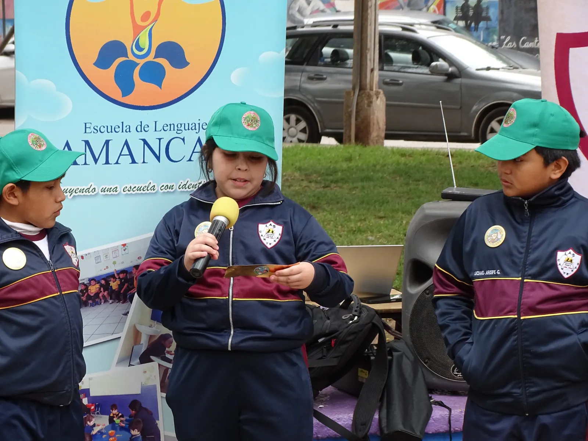
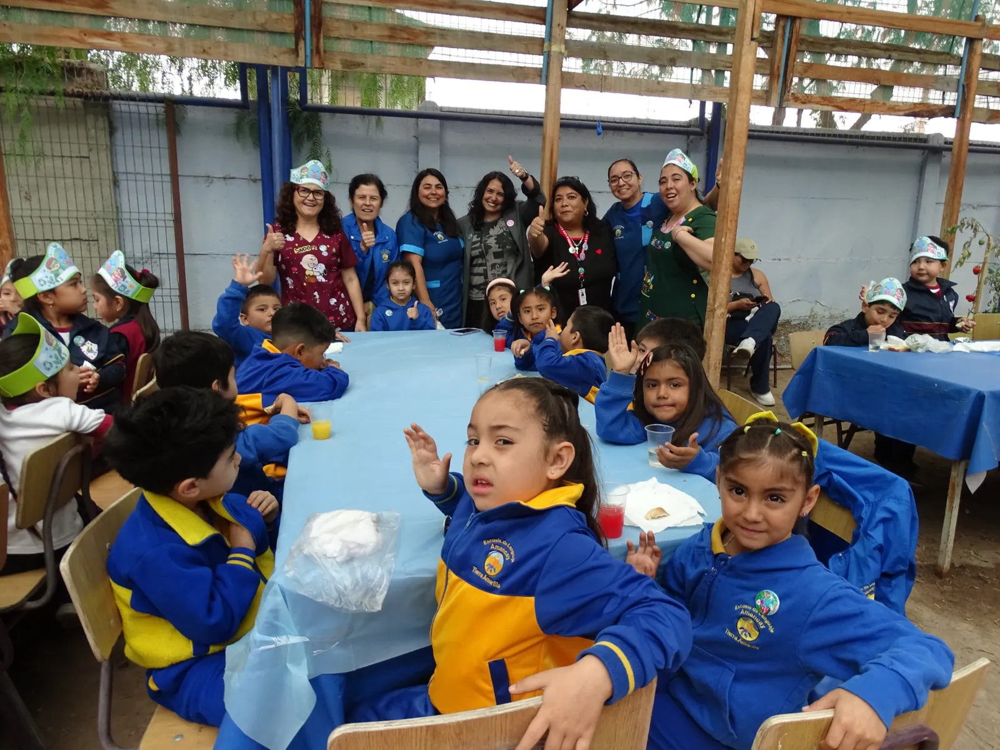
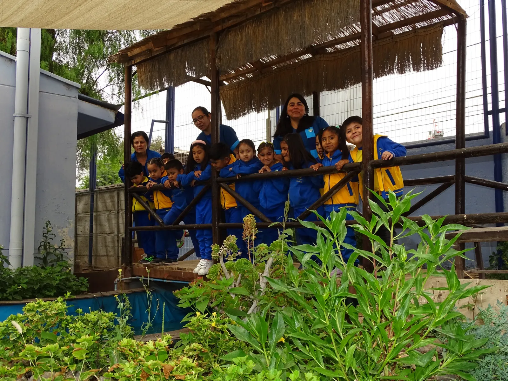
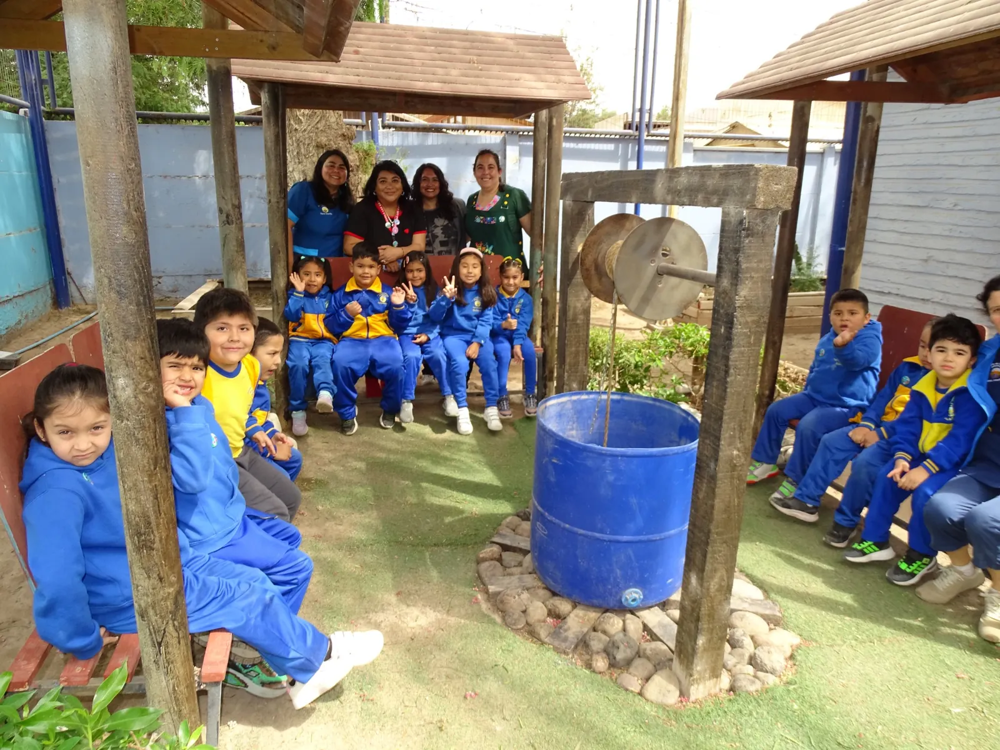
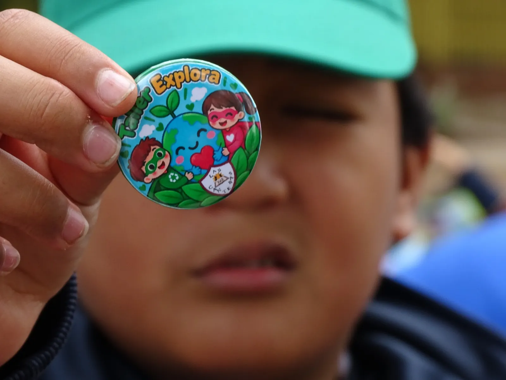

El cuidado del medioambiente reunió a las comunidades educativas de la Escuela Las Canteras de Copiapó y la Escuela de Lenguaje Amancay de Tierra Amarilla en una experiencia colaborativa que tuvo como protagonistas a más de 50 estudiantes de Prekínder, Kínder y Cuarto Básico. Bajo el nombre «Guardianes del Planeta», niñas y niños compartieron actividades relacionadas con el reciclaje, la reutilización de materiales y la protección de su entorno.
La iniciativa nació en el Campamento Explora Va! 2025, donde las docentes Karen Agüero, de la Escuela de Lenguaje Amancay, y Paulina Olivares y Marcela González, de la Escuela Las Canteras, comenzaron a desarrollar una propuesta pedagógica conjunta. Durante 2026, el trabajo tomó forma mediante actividades en ambos establecimientos y un encuentro de intercambio de aprendizajes en Copiapó.
Aprender y enseñar entre distintas edades
Uno de los aspectos destacados fue la participación de estudiantes de Cuarto Básico de Las Canteras como monitores de niñas y niños más pequeños. Al compartir conocimientos y acompañar actividades, fortalecieron habilidades de comunicación, trabajo en equipo, responsabilidad y colaboración.
Los estudiantes presentaron trabajos y mensajes sobre el cuidado del planeta, demostrando que el compromiso ambiental también se construye desde acciones sencillas, cercanas a la vida cotidiana.
El huerto escolar como aula viva
Durante la jornada, los participantes recorrieron el huerto de la Escuela Las Canteras y conocieron espacios de cultivo que permiten aprender mediante la observación directa. La experiencia vinculó el cuidado del entorno con la producción de alimentos, el uso responsable del agua y el valor de mantener espacios verdes en una región marcada por la aridez.
Este recorrido permitió compartir recursos y prácticas de educación ambiental con la comunidad visitante, mostrando cómo un huerto puede convertirse en un espacio pedagógico para distintas edades.
Una experiencia que conecta comunidades
La colaboración entre Las Canteras y Amancay demuestra el potencial de desarrollar proyectos educativos más allá de los límites de cada establecimiento. El intercambio entre estudiantes, docentes y comunidades amplía las oportunidades para aprender, compartir metodologías y abordar desafíos ambientales del territorio.
De cara al futuro, experiencias como esta abren la posibilidad de impulsar vínculos entre escuelas con y sin huerto escolar, de modo que cada comunidad pueda aportar desde sus propias capacidades: reciclaje, reutilización, cultivo, observación de la naturaleza, ciencia o tecnología. Se trata de una proyección de colaboración, aún no de una red formalmente constituida.
«Guardianes del Planeta» deja un mensaje claro: la educación ambiental se fortalece cuando las comunidades aprenden y actúan juntas.
Galería fotográfica








Registro fotográfico: Escuela Las Canteras de Copiapó.
Video de la actividad: Explora Atacama compartió un registro audiovisual del encuentro. 🎥 Ver video de Guardianes del Planeta en Instagram ↗